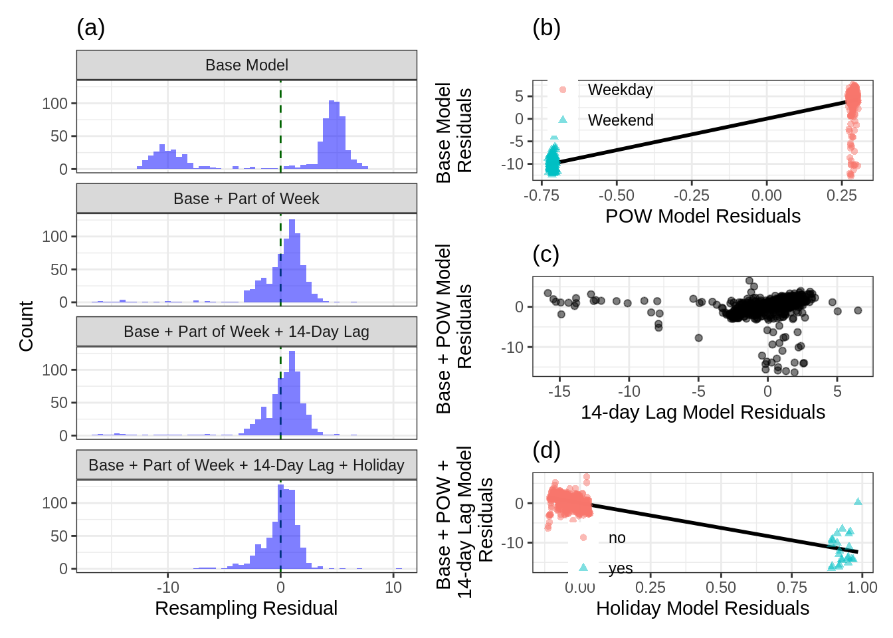

4.8 Residual Diagnostic Plots
The response for the regression model is the ridership at the Clark/Lake station, and our initial model will contain the predictors of week, month and year.
As we saw earlier in this chapter, the distribution has two peaks, which we found were due to the part of the week (weekday versus weekend). To investigate the importance of part of the week we then regress the base predictors on part of the week and compute the hold-out residuals from this model. We can see that including part of the week in the model further reduces the residual distribution as illustrated in the histogram labeled Base + Part of Week.
Next, let’s explore the importance of the 14-day lag of ridership at the Clark/Lake station.
holidays <-
c("USNewYearsDay", "Jan02_Mon_Fri", "USMLKingsBirthday",
"USPresidentsDay", "USMemorialDay", "USIndependenceDay",
"Jul03_Mon_Fri", "Jul05_Mon_Fri", "USLaborDay", "USThanksgivingDay",
"Day_after_Thx", "ChristmasEve", "USChristmasDay", "Dec26_wkday",
"Dec31_Mon_Fri")
common_holiday <-
apply(training %>% dplyr::select(one_of(holidays)), 1,
function(x) ifelse(any(x == 1), 1, 0))
training <-
training %>%
mutate(
holiday = common_holiday,
weekday = ifelse(dow %in% c("Sat", "Sun"), 0, 1)
)# get_resid()
get_resid <- function(terms, next_term, return_mod = FALSE) {
ctrl$verboseIter <- FALSE
ctrl$predictionBounds <- c(0, NA)
set.seed(4194)
mod <- train(s_40380 ~ .,
data = training[, c("s_40380", terms)],
method = "lm",
metric = "RMSE",
maximize = FALSE,
trControl = ctrl)
x_mod <- train(as.formula(paste(next_term,"~ .")),
data = training[, c(terms, next_term)],
method = "lm",
metric = "RMSE",
maximize = FALSE,
trControl = ctrl)
if(!return_mod) {
out <- mod$pred
out$Resample <- ymd(out$Resample)
out$Date <- train_days[out$rowIndex]
out$Month <- training$month[out$rowIndex]
out$holiday <- training$holiday[out$rowIndex]
out$weekday <- training$weekday[out$rowIndex]
out$Residual <- out$obs - out$pred
out$xResidual <- x_mod$pred$obs - x_mod$pred$pred
} else out <- mod
out
}# There will be a warning about the "outcome only has two possible values".
# This can be ignored.
theme_set(theme_bw())
base_resid <-
get_resid(terms = c("year", "month", "week"), next_term = "weekday") %>%
mutate(Model = "Base Model")## Warning in train.default(x, y, weights = w, ...): You are trying to do
## regression and your outcome only has two possible values Are you trying to do
## classification? If so, use a 2 level factor as your outcome column.pow_resid <-
get_resid(terms = c("year", "month", "week", "weekday"), next_term = "l14_40380") %>%
mutate(Model = "Base + Part of Week")
l14_resid <-
get_resid(
terms = c("year", "month", "week", "weekday", "l14_40380"),
next_term = "holiday"
) %>%
mutate(Model = "Base + Part of Week + 14-Day Lag")## Warning in train.default(x, y, weights = w, ...): You are trying to do
## regression and your outcome only has two possible values Are you trying to do
## classification? If so, use a 2 level factor as your outcome column.## Warning in nominalTrainWorkflow(x = x, y = y, wts = weights, info = trainInfo, :
## There were missing values in resampled performance measures.hol_resid <-
get_resid(terms = c("year", "month", "week", "weekday", "l14_40380", "holiday"),
next_term = "l14_40370") %>%
mutate(Model = "Base + Part of Week + 14-Day Lag + Holiday")
mod_lev <- c("Base Model", "Base + Part of Week",
"Base + Part of Week + 14-Day Lag",
"Base + Part of Week + 14-Day Lag + Holiday")
model_resid <-
bind_rows(base_resid, pow_resid, l14_resid, hol_resid) %>%
mutate(
Model = factor(Model, levels = mod_lev),
holiday = ifelse(holiday == 1, "yes", "no"),
weekday = ifelse(weekday == 0, "Weekend", "Weekday")
)
resid_hists <-
ggplot(model_resid, aes(x = Residual)) +
geom_vline(xintercept = 0, lty = 2, col = "darkgreen") +
geom_histogram(binwidth = 0.5, col = rgb(1, 1, 1, 0), fill = "blue", alpha = .5) +
facet_wrap(~Model, ncol = 1) +
xlab("Resampling Residual") +
ylab("Count") +
ggtitle("(a)")
day_resid <-
base_resid %>%
mutate(weekday = ifelse(weekday == 0, "Weekend", "Weekday")) %>%
ggplot(aes(x = xResidual, y = Residual)) +
geom_smooth(se = FALSE, method = lm, col = "black") +
geom_point(aes(col = weekday, shape = weekday), alpha = .5) +
xlab("POW Model Residuals") +
ylab("Base Model \n Residuals \n") +
theme(
legend.position = c(.2, .8),
legend.background = element_blank(),
legend.title = element_blank()
) +
ggtitle("(b)")
l14_PR_resid <-
ggplot(pow_resid, aes(x = xResidual, y = Residual)) +
geom_point(alpha = .5) +
xlab("14-day Lag Model Residuals") +
ylab("Base + POW Model \n Residuals \n") +
ggtitle("(c)")
hol_PR_resid <-
l14_resid %>%
mutate(holiday = ifelse(holiday == 1, "yes", "no")) %>%
ggplot(aes(x = xResidual, y = Residual)) +
geom_smooth(se = FALSE, method = lm, col = "black") +
geom_point(aes(col = holiday, shape = holiday), alpha = .5) +
xlab("Holiday Model Residuals") +
ylab("Base + POW + \n 14-day Lag Model \n Residuals") +
theme(
legend.position = c(.2, .25),
legend.background = element_blank(),
legend.title = element_blank()
) +
ggtitle("(d)")
resid_hists | (day_resid / l14_PR_resid / hol_PR_resid)## `geom_smooth()` using formula 'y ~ x'
## `geom_smooth()` using formula 'y ~ x'
The distribution of residuals from the model resampling process for the base model and the base model plus other potentially useful predictors for explaining ridership at the Clark/Lake station. (a)
The partial regression plot for the effect of part of the week. (b)
The partial regression plot for the 14-day lag predictor of the Clark/Lake station. (c)
The partial regression plot for holiday classification. (d)